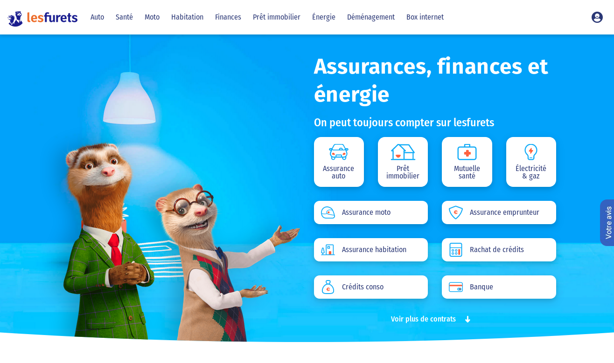
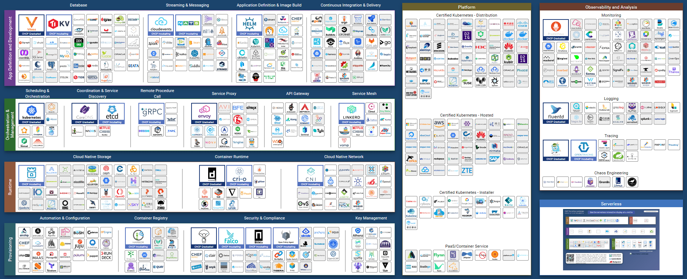

Becoming Cloud Native
@gdigugli – Gilles Di Guglielmo
- Designer of sweet cooked software since 1999
- Software Architect at LesFurets.com
@ozangunalp – Ozan Gunalp
- PhD in Computer Science, JenkinsPipelineUnit author
- Software Architect at LesFurets.com
Insurance comparison (and more !)


- 1 website :
- 5 Insurance Products : Car, Health, Home, Bike, Loan
- Banks, energy, loans, Internet Box
- 1 codebase, 450k lines of code, 60k unit tests, 150 selenium tests
- 23 Developers, 1 DevOps, 3 Architects
- 20+ production servers including Load balancers, Frontend, Backend, Databases, BI
- 1 release per day
- 8 years of code history
- 3M quotes/year, 40% of market share, 4M of customers
Reader's digest

Cloud Native Transformation: Practical Patterns for Innovation
by Pini Reznik, Jamie Dobson, Michelle Gienow
Cloud Native Landscape

Reader's thoughts
- Software design became more driven by the infrastructure
- Software governance is not part of the methodology
- Data flow transformation and data governance is not covered
- Technical cloud stack could be obsolete very quickly
- Most tools are not ready for production
- Vendor lock-in is nearly impossible to avoid
- Big challenge to implement the stack relying on OSS
Cloud Native LesFurets: Where to start ?
- Data/BI
- Runtime software architecture
- Infrastructure Management
- Software Factory - CI/CD
Overview of current architecture

Data/BI
- Cloud BI - Reporting
- Migrate batch processes
- Managed Cassandra, store all immutable data
- Managed SQL database, MariaDB to another dialect
only mutable data: user accounts, dynamic configuration
Infrastructure management
- Ansible -> Terraform / Kubernetes
- Networking rules
- IPs authorized by Insurer WS
- Cost management : Service/Usage instead of machines
CI/CD - Software Factory
- Scalable CI resources
- Cloud replacement for quality tools
- Iso prod runtime environment
Runtime software architecture
- NGinx - Load balancers
- Stateless application - Session Store
- Serve client web app resources separately from the server
- Wordpress
Thank You!